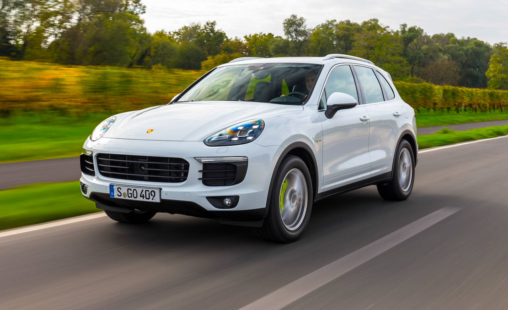

| 
more images |
The Porsche Cayenne is a mid-size luxury crossover sport utility
vehicle produced by the German manufacturer Porsche since 2002, with North American sales
beginning in 2003. It is the first V8-engined vehicle built by Porsche since 1995, when the
Porsche 928 was discontinued. It is also Porsche's first off road variant vehicle since its Super
and Junior tractors of 1950s, and the first Porsche with four doors. Since 2008, all engines have
featured direct injection technology.
The second-generation Cayenne (Type 92A) was unveiled at the 2010 Geneva Motor Show in
March following an online reveal. The Cayenne shares its platform, body frame, doors and
electronics with the similar Volkswagen Touareg and Audi Q7. The second generation received
a facelift in 2014 with minor external changes, and introduced a new plug-in E-Hybrid version,
with its public launch at the Paris Motor Show. |

more images
|
The BMW X5 is a mid-size luxury SUV produced by BMW.
The first generation of the X5, with the chassis code E53, made its debut in 1999.
It was BMW's first SUV and it also featured all-wheel drive and was available with
either manual or automatic transmission. In 2006, the second generation X5 was
launched, known internally as the E70, featuring the torque-split capable xDrive
all-wheel drive system mated to an automatic transmission, and in 2009 the X5 M
performance variant was released as a 2010 model.
BMW branded the X5 as a Sport Activity Vehicle (SAV) rather than an SUV, to emphasize
its on-road ability despite its size. Like the Lexus RX 300, the X5 heralded the shift from
light truck-based body-on-frame SUVs to crossovers underpinned by unibody car platforms
that would come to fruition in the late 2000s. |